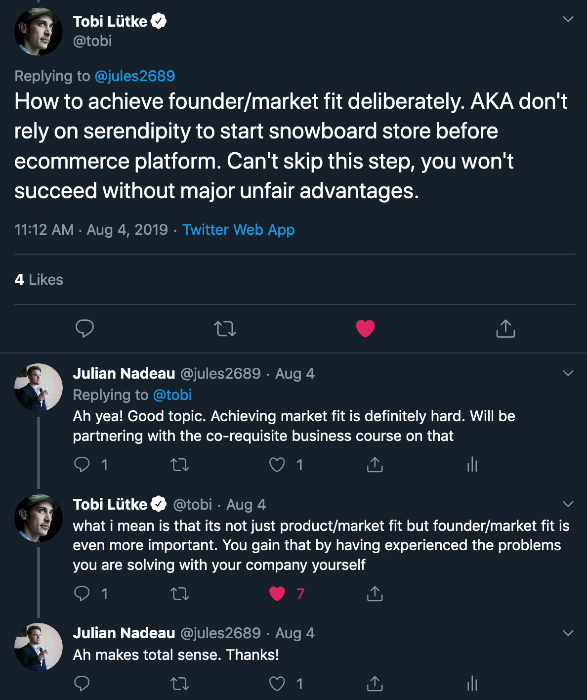
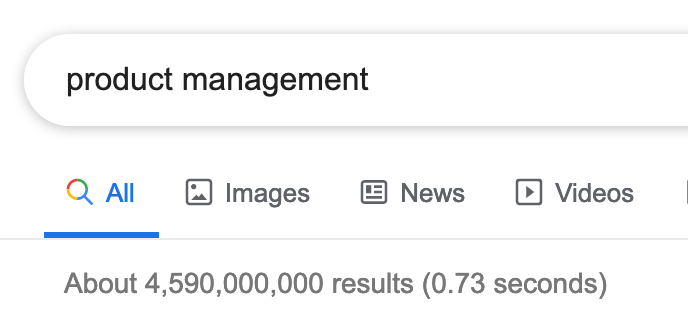
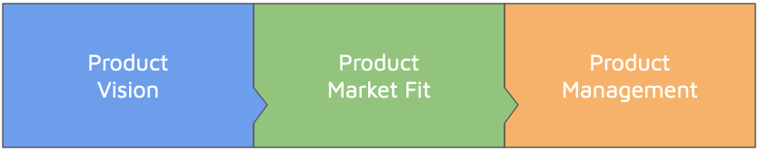
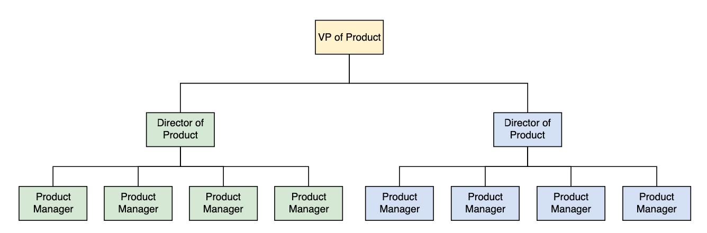
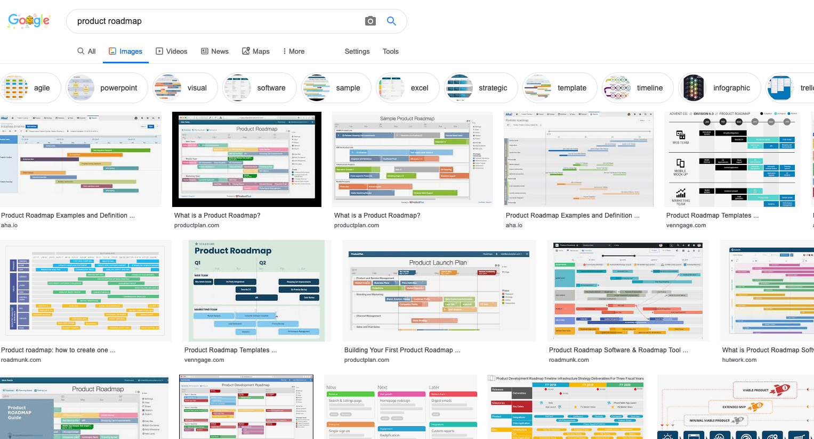
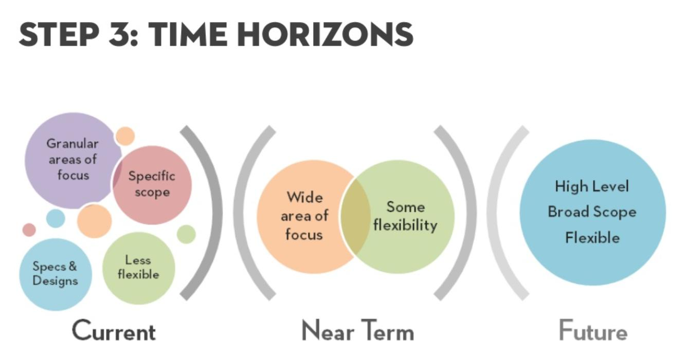

It means that you need to be intentional in figuring out how your product fits into the market. Do your research and position. Do not rely on chance.
There’s no shortage of results online…

There are many areas of product in any given company. There’s likely no exhaustive list because everyone does it a little bit differently.
The general idea is that you have a product to sell. How do you know it’s the right product? How do you know if it’s good? Are there customers for this product? Will they be willing to pay money? If not, who will pay money?

While product can encompass a lot more, we’re going to talk about the basics: A vision that inspires your company, informs your product market fit, and what to do after you have all that, manage that product.
The North Star has guided travelers for centuries. It is a reference point for which to position and “advise” your path forward.
These examples all show a purpose, a drive to exist.
Their purpose isn’t just to “make money”. That can’t really be your purpose unless you’re a bank. It can be a goal, but not your main driver.
You don’t find customers for your products. You find products for your customers.
~ Seth Godin, author and former .com executive (https://seths.blog/2009/12/first-organize-1000/)
Let’s start with when you don’t have it.
When you do have it, many of the bullet points above are inversed. Also, sales and support staff become in high demand - and not because your product is complex/crappy, but because there’s such an influx in customers!
You have a few components you need to work with. The major one is the market.
The last component we’ll talk about is the team. If you have a great product and all the stars align in the market, but you have a team without expertise, a lack of leadership, or if you fight - you’ll fail just the same.
Your team is highly valuable and getting the right people is important. We’ll talk more about this in another lecture.
One thing to note, that’s fairly important, is that you can’t determine product market fit once and then assume it remains true.
You need to always be validating your product market fit. In the later stages of your company, this will be through product management, UX, Marketing, analytics, data, and other areas.
Once you have a vision, you’ve determined product market fit, and you’re building your product… how do you make sure you stay true to the product’s vision? How do you determine if a feature is valid and useful? Provides value?
The answer is product management.
Product Management is a craft, just like development, design, user research, writing, and the many other crafts you’ll need throughout the lifetime of your company.
The product manager (PM for short) is typically responsible for the strategy of a feature, roadmaps, and feature definition for that product or product line.
They are typically found in the same sort of organizational structure as other crafts within the company. This is one such example and may vary by company. We will use this example in this lecture.

People at the top of the product organizations are responsible for the vision of the entire company. Companies may have many projects, but they must align on a core vision and somehow fit together.
Keep Note: The CEO and Founders often remain heavily involved in this role. In many cases this role remains the CEO’s job, and the head of product deals with the product organization management alongside being a right-hand to the CEO for product decisions.
These people report into the product top leadership. They are usually responsible for a department or large section of a product. They work with the VP to ensure that their section stays aligned with the company’s vision. They also work with their Product Managers (PMs) to ensure alignment down to the project/feature level.
The product manager (PM for short) is typically responsible for the strategy of a feature, roadmaps, and feature definition for that product or product line.
A PM is responsible for a concise section of the entire product. They work with their director to ensure it aligns with the product vision for the department.
Despite the hierarchy, these people all must remain aligned and often discuss and influence direction.
This type of organization does not mean that engineering, design, etc cannot take part in product planning. These people are all invested in the product too. The Product Management’s role is to simply ensure the plans of the company remain aligned with the vision.
Most people tend to default to a product roadmap that is based solely ontime.

Section inspired by this Twitter thread & this article from Janna Bastow (CEO of ProdPad), including the images
Time-based roadmaps make sense at first, but as time goes on you have no idea what is actually going to happen. Now you’re making stuff up and putting arbitrary limits.
You’re welcome to use a timebased roadmap on a short term (few weeks to 6 weeks), but for the rest:

Image borrowed from https://www.mindtheproduct.com/2018/03/growing-up-lean/, they maintain copyright of the image
This allows you to have a “current”, “medium”, and “long term” vision.
Of course, sometimes you need timelines for business reports and other areas. Accommodate as required.
Image borrowed from https://www.mindtheproduct.com/2018/03/growing-up-lean/, they maintain copyright of the image